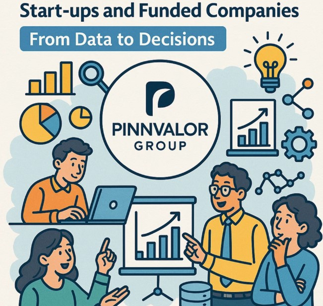

MIS Essentials for Start-ups and Funded Companies: From Data to Decisions
In today’s fast-paced business environment, start-ups and funded companies face unique challenges that require smart, data-driven decision-making to stay competitive and grow sustainably. One of the most powerful tools available to these businesses is a robust Management Information System (MIS) — a framework that collects, processes, and presents data to help managers make informed decisions.
This blog dives into the essentials of MIS for start-ups and funded companies, explaining how these systems can transform raw data into actionable insights, ultimately accelerating growth and improving operational efficiency.
Ready to transform complex data into clear, actionable business insights?
From automating reports to enhancing investor communication, MIS is the backbone of operational excellence and transparent growth for funded ventures. Make data your competitive advantage.
What is MIS and Why Does It Matter?
Management Information System (MIS) refers to a structured approach to gathering, managing, and analyzing business data to support planning, control, and operational activities. MIS acts as a bridge between raw data and strategic decision-making.
For start-ups and funded companies, where resources are often limited and growth targets aggressive, MIS is crucial because:
- It provides real-time visibility into business performance.
- It enables quick identification of problems and opportunities.
- It facilitates data-driven decisions that reduce risks.
- It supports scalability by automating routine reporting tasks.
Key Components of MIS for Start-ups and Funded Companies
1. Data Collection and Integration
Start-ups often operate across multiple tools — CRM, finance software, marketing platforms, and product development trackers. An effective MIS integrates data from these diverse sources into a centralized database, ensuring consistent, reliable information.
2. Data Processing and Analysis
Raw data needs to be cleaned, organized, and analyzed to become useful. This includes:
- Aggregating data for summary reports.
- Using analytical models to forecast trends.
- Segmenting data by customer, product, or region for targeted insights.
3. Reporting and Visualization
MIS provides custom dashboards and reports tailored to the needs of different stakeholders — founders, investors, department heads. Visual tools like charts, graphs, and heatmaps help quickly communicate complex information.
4. Decision Support
Beyond just reporting, advanced MIS solutions incorporate decision support tools such as scenario planning, KPI tracking, and alerts for anomalies, empowering leadership to act proactively.
Why Start-ups and Funded Companies Need MIS
Accelerate Growth with Strategic Insights
Funded companies, in particular, face pressure to deliver rapid growth and measurable results. MIS helps monitor metrics like customer acquisition cost, lifetime value, burn rate, and runway — key to managing cash flow and scaling efficiently.
Optimize Resource Allocation
Start-ups often juggle tight budgets and lean teams. MIS highlights which projects, campaigns, or product lines yield the best ROI, allowing smarter allocation of limited resources.
Improve Operational Efficiency
By automating data collection and reporting, MIS frees up time for strategic thinking rather than manual number crunching. It also uncovers bottlenecks in workflows and operational inefficiencies that can be addressed promptly.
Enhance Investor Communication
Funded companies must maintain transparent, timely communication with investors. MIS dashboards provide up-to-date performance snapshots, facilitating trust and smoother fundraising rounds.
Best Practices for Implementing MIS in Start-ups and Funded Companies
- Start Small, Scale Gradually
Begin with core business metrics and essential reports. As your company grows, expand MIS capabilities to cover new departments and more advanced analytics. - Choose the Right Tools
There is no one-size-fits-all solution. Evaluate MIS tools based on your business model, existing software ecosystem, and growth plans. Cloud-based, scalable systems often work best for start-ups. - Ensure Data Quality
Garbage in, garbage out. Establish data governance policies and train teams to enter accurate, timely data. - Involve Stakeholders Early
Engage founders, managers, and investors to define key performance indicators (KPIs) that truly matter to your business. - Review and Iterate
Regularly assess the MIS outputs and update reports, dashboards, and metrics as the business evolves.
Conclusion
For start-ups and funded companies aiming to turn data into strategic decisions, an effective Management Information System is indispensable. It not only empowers leadership with timely insights but also drives operational excellence, supports growth objectives, and strengthens investor confidence.
By understanding and implementing the essentials of MIS, emerging businesses can transform complex data into a competitive advantage, fueling their journey from early-stage ventures to market leaders.